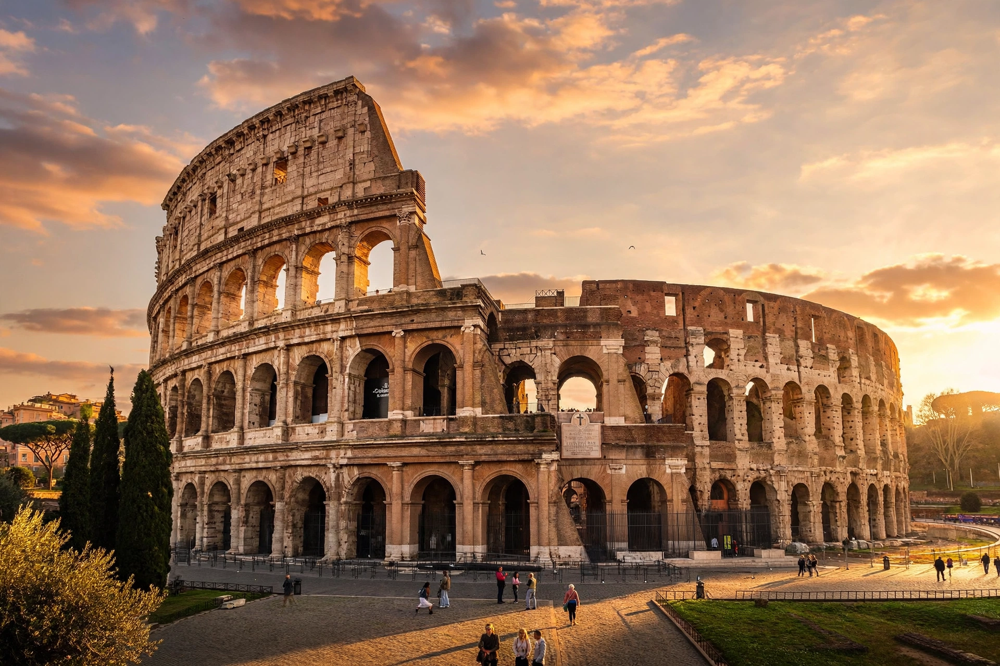

Ancient Roman architecture

Ancient Roman architecture adopted the external language of classical Greek architecture and developed it in new directions, exploiting technologies such as the arch, the vault, the dome, and Roman concrete (opus caementicium) to create large, complex interior spaces and monumental infrastructure across the Roman Empire.
1 Materials and techniques
2 Building types
3 Engineering works
4 Influence
Materials and techniques
Rome's architectural revolution rested on concrete faced with brick or stone, which allowed vast vaulted interiors such as those of the Basilica of Maxentius and the imperial baths. The Romans developed the orders — Tuscan and Composite alongside Doric, Ionic and Corinthian — and used arches structurally rather than merely decoratively. The treatise De architectura by Vitruvius is the principal surviving theoretical text.
Building types
Distinctive Roman building types include the basilica (law courts and commerce), the amphitheatre (the Colosseum, AD 80, seating some 50,000), the circus for chariot racing, theatres, triumphal arches, temples on high podia such as the Pantheon with its 43-metre concrete dome, public baths (thermae) incorporating libraries and gymnasia, multi-storey apartment blocks (insulae), and the domus and villa for the wealthy.
Engineering works
Roman engineers built roads, bridges, harbours, and aqueducts — such as the Pont du Gard in southern France — that supplied cities with water over long distances using gentle gradients and inverted siphons. Cities were planned on grid layouts with forums, sewers, and public latrines.
Influence
Roman architecture was revived in the Renaissance by architects such as Alberti and Palladio, and Roman forms underpin Neoclassical and Beaux-Arts architecture worldwide; concrete construction remains its most consequential legacy.